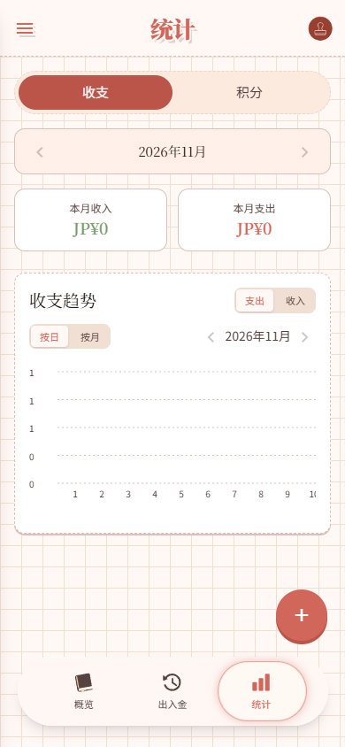

PigBang 日历与个人详情更新预览
2026-11-21 · R-57 / B-91 · 本地隔离页面预览，统计图使用空账目状态。
B-91 头像编辑按钮
保留 26px 徽章，改用浅底细边框与 12px 铅笔，点击范围扩大到 44px。夏季与秋季沿用对应主题的外圈光效。
秋季 · 修改前秋季 · 新样式夏季 · 新样式
R-57 统计页月份导航
收支趋势和积分推移共用页顶月份。按日显示所选月份，按月显示所选月份所在年份；保留按日 / 按月与收入 / 支出切换。
修改前
新样式